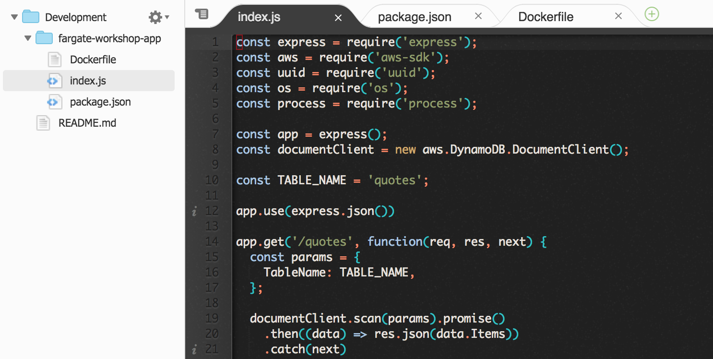
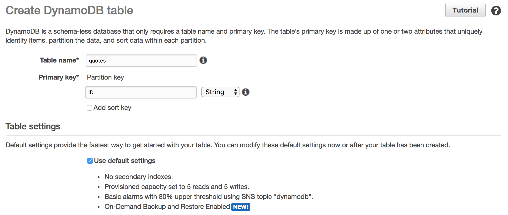

This module walks through the process of building and pushing a Docker image of a small web application for later deployment. A Docker image is a deployable artifact that includes both application code and its dependencies. In this module, you’ll clone a repository from GitHub into your AWS Cloud9 workspace, build a Docker image from it, test it, and push it to the Amazon ECR repository created in the previous module.
The sample application is a simple web application for storing notable quotations. It’s written as a node.js application and uses the Express web framework and the AWS SDK. Quotations are stored in a simple DynamoDB table called quotes.
The application has four endpoints:
| Endpoint | Description |
|---|---|
| PUT /quotes | Create a new quotation |
| GET /quotes/:quote_id | Show a specific quotation |
| GET /quotes | Show all quotations |
| GET / | Show status information |
Clone the sample application from the GitHub repo and build it using a tag of your repository from the repository URI you noted in the previous module.
✅ Step-by-step Instructions
Switch to the tab where you have your Cloud9 environment opened.
Clone the contents of the sample application to your environment by running git clone https://github.com/jpignata/fargate-workshop-app in the Cloud9 terminal:
git clone https://github.com/jpignata/fargate-workshop-appAdmin:~/environment $ git clone https://github.com/jpignata/fargate-workshop-app
Cloning into 'fargate-workshop-app'...
remote: Counting objects: 6, done.
remote: Compressing objects: 100% (5/5), done.
remote: Total 6 (delta 0), reused 6 (delta 0), pack-reused 0
Unpacking objects: 100% (6/6), done.The fargate-workshop-app directory will now appear in the environment explorer in the left-hand module. Expand it by clicking on it and open the files in the directory by double clicking on them.

Open the Dockerfile and inspect its contents. A Dockerfile is a text document that contains all the commands a user could call on the command line to assemble an image.
FROM node:8.9.4 # Use node:8.9.4 as the base image
WORKDIR /app # Set the working directory for future commands
ENV PORT=80 # Set an environment variable in the container
EXPOSE 80 # Indicates that your container will listen on TCP 80
ADD index.js /app # Add index.js and package.json to
ADD package.json /app # the /app directory
RUN npm install --silent # Install dependencies into image
CMD ["node", "index.js"] # Set default command for containers run from
# this imageIn the Cloud9 terminal, change your working directory to the newly cloned application directory by running: cd fargate-workshop-app.
cd fargate-workshop-appBuild the Docker image and tag it using the repository URI you noted in the previous module. For example, if the repository URI were 123456789012.dkr.ecr.us-east-1.amazonaws.com/workshop, then you’d run:
docker build --tag 123456789012.dkr.ecr.us-east-1.amazonaws.com/workshop .Ensure that you change the image name to the repository URI you noted in the previous module. You’ll see Docker building the image by applying each directive of the above Dockerfile in realtime:
Admin:~/environment/fargate-workshop-app (master) $ docker build --tag 123456789012.dkr.ecr.us-east-1.amazonaws.com/workshop .
Sending build context to Docker daemon 59.39kB
Step 1/8 : FROM node:8.9.4
8.9.4: Pulling from library/node
f49cf87b52c1: Pull complete
7b491c575b06: Extracting [==================================================>] 19.27MB/19.27MB
b313b08bab3b: Download complete
51d6678c3f0e: Downloading [===================> ] 51.8MB/135MB
da59faba155b: Download complete
7f84ea62c1fd: Download complete
0ae80f895f02: Downloading [=> ] 190kB/18.51MB
2f11c95c9552: Waiting
...Verify that your Docker image has been built with the correct tag by running docker images <repository URI> in the Cloud9 terminal. For example:
docker images 123456789012.dkr.ecr.us-east-1.amazonaws.com/workshopAdmin:~/environment/fargate-workshop-app (master) $ docker images 123456789012.dkr.ecr.us-east-1.amazonaws.com/workshop
REPOSITORY TAG IMAGE ID CREATED SIZE
123456789012.dkr.ecr.us-east-1.amazonaws.com/workshop latest 7fca0f295425 35 seconds ago 714MBCreate a DynamoDB table called quotes that has a primary key called ID which is a string.
✅ Step-by-step Instructions
Go to the AWS Management Console, click Services then select DynamoDB under Database.
Click Create table.
Enter quotes in Table name and ID in Primary Key. Leave the data type dropdown set to String. Leave Use default settings checked.
⚠️ The table and primary key names are case-sensitive so please ensure you’ve typed quotes and ID exactly as shown.

Click Create.
Run a Docker container in your Cloud9 environment and experiment with it using curl and jq to verify it is working.
✅ Step-by-step Instructions
Switch to the tab where you have your Cloud9 environment opened.
Install jq for JSON pretty printing.
To aid in your testing, install jq which is a command line JSON processor. Install it by running sudo yum install -y jq in the Cloud9 terminal.
sudo yum install -y jqRun the Docker container by running docker run in the Cloud9 terminal using the Docker image we built in step 1:
docker run --detach --publish 80:80 --volume $HOME/.aws:/root/.aws \
123456789012.dkr.ecr.us-east-1.amazonaws.com/workshopYou’ll need to change the last parameter to the Docker image tag you specified in step 1. Let’s look at each part of the command to understand what it is doing:
| Argument | Description |
|---|---|
| –detach | Run the container in the background to allow us to use the terminal to run other commands. |
| –publish 80:80 | Expose the container port 80 on the host. This will allow us to connect to 127.0.0.1:80 and that traffic will be forwarded to your application running in the container. |
| –volume $HOME/.aws:/root/.aws | Mount your AWS configuration onto the container. This gives your application access to your AWS credentials for use in testing. |
| 123456789012.dkr.ecr.us-east-1.amazonaws.com/workshop | The docker image to run. Replace this parameter with the tag you used in step 1. |
Test the application using curl:
curl -Ss http://127.0.0.1/ | jqIf the application is running, you’ll see a JSON object with the hostname which will match the container ID you saw after running the previous step:
Admin:~/environment/fargate-workshop-app (master) $ curl -Ss http://127.0.0.1/ | jqNext, hit the quotes index endpoint to list all quotes in the database.
curl -Ss http://127.0.0.1/quotes | jqAs we haven’t added any quotes yet, we’ll see an empty array:
Admin:~/environment/fargate-workshop-app (master) $ curl -Ss http://127.0.0.1/quotes | jqAdd a quote to the database:
curl -Ss http://127.0.0.1/quotes -X PUT -H "Content-Type: application/json" -d '{"Text":"There are no passengers on spaceship earth. We are all crew.","AttributedTo":"Marshall McLuhan"}'This command sends the following JSON object to the quotes create endpoint:
Hit the quotes index endpoint to list all quotes in the database to verify the quote has been added:
curl -Ss http://127.0.0.1/quotes | jqThe output will resemble this, with a different UUID:
Admin:~/environment/fargate-workshop-app (master) $ curl -Ss http://127.0.0.1/quotes | jqLog into your Amazon ECR registry and push the Docker image into its repository.
✅ Step-by-step Instructions
Switch to the tab where you have your Cloud9 environment opened.
Log into your Amazon ECR registry using the helper provided by the AWS CLI in the Cloud9 terminal:
$(aws ecr get-login --no-include-email)Admin:~/environment/fargate-workshop-app (master) $ $(aws ecr get-login --no-include-email)
Login SucceededPush your Docker image. Ensure you change the image to the image tag you used in step 1:
docker push 123456789012.dkr.ecr.us-east-1.amazonaws.com/workshopYou’ll see the Docker image being pushed:
Admin:~/environment/fargate-workshop-app (master) $ docker push 123456789012.dkr.ecr.us-east-1.amazonaws.com/workshop
The push refers to a repository [123456789012.dkr.ecr.us-east-1.amazonaws.com/workshop]
e27327a08730: Pushing [=======================================> ] 29.72MB/37.67MB
966f0d7cf16c: Pushed
719df9cfe13b: Pushed
f9cc7569a18f: Pushed
092504c250f7: Pushing [==================================================>] 4.184MB
299e6ab856be: Waiting
50599c766115: Waiting
d4141af68ac4: Waiting
8fe6d5dcea45: Waiting
06b8d020c11b: Waiting
b9914afd042f: Waiting
4bcdffd70da2: Waiting🔑 Docker images are deployable artifacts that include both application code and its dependencies bundled.
🛠️ You built a sample application with four simple REST endpoint and pushed it to the Amazon ECR repository created in Create a Docker Image Repository.
🛠️ You created a DynamoDB table named quotes to store data for your sample application.
✅ Proceed to the next module, Create a Service, wherein you’ll configure a task definition and its IAM role, create a load balancer, and create a new ECS service for this Docker container.